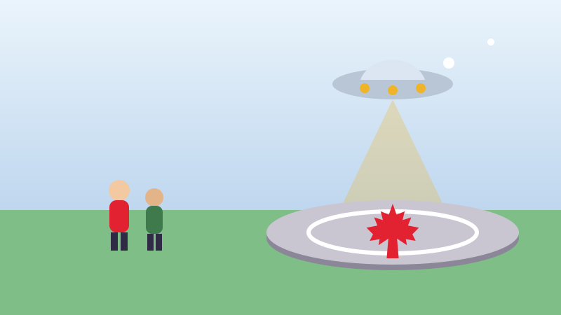

🛸 For Kids
The Town That Built a Landing Pad for Aliens
Canada turned one hundred in 1967, and one small town gave it the strangest present of all.

In 1967 Canada had a big birthday. It was one hundred years old, and towns all over the country built something to celebrate. Most built a park, a swimming pool or a library.
The town of St. Paul, in Alberta, had a different idea. They built a landing pad for flying saucers.
It is a big raised circle of concrete with a map of Canada beside it. It opened on the 3rd of June, 1967. A sign says the sky is open to travellers from anywhere, and that they are welcome in St. Paul.
Nobody in St. Paul really expected a spaceship. That was rather the point. The town wanted a present that said Canada is a friendly place for everybody, no matter how far away they come from.
Guinness World Records calls it the first official UFO landing pad in the world. It is still there today, and people drive a long way to stand on it and take a photograph.
No spaceship has landed yet. The town says it is still waiting, and the pad is kept ready.
Now try three questions
No timer and no score to worry about. Every answer tells you why.
About this quiz
This story is about the town of St. Paul, Alberta, which celebrated Canada's hundredth birthday in 1967 by building a landing pad for flying saucers. It is still there.
It is written in short sentences for children aged six to nine, with a picture drawn for this site and three questions at the end. Tap the Read aloud button and the page will read the questions out loud.